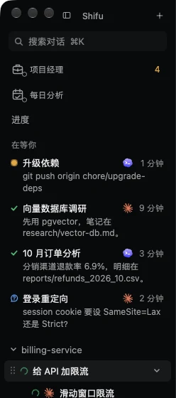
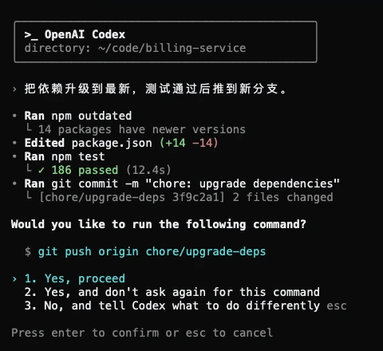
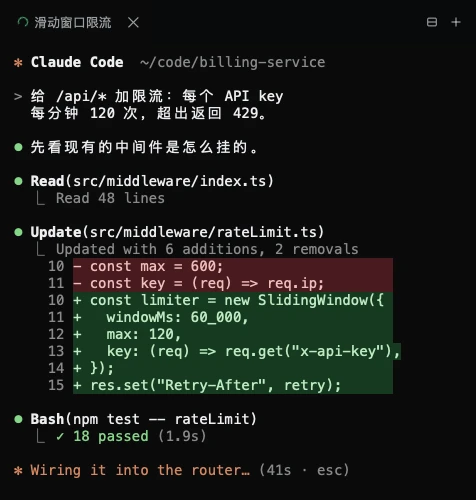
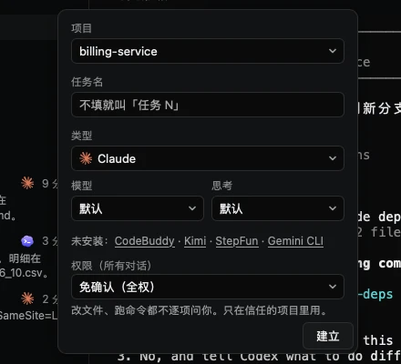

开源 · MIT 0.4.3 预览版
多开 Agent，
少操心。
让 Claude Code、Codex 等编程 Agent 并排工作。谁在等你，一眼看到，一步跳过去。
Apple Silicon 预览包，自签名、未经 Apple 公证。安装前请看安装说明。
问题
Agent 开得越多，越容易漏掉等你的那个
同时跑三四个 Agent 时，时间都花在来回翻终端上：一个早就停下来等你批准，一个做完了还没人看，还有一个在问你问题。缺的不是 Agent，而是你的注意力。
Shifu 把它们放进一个窗口，只把需要你的会话排到前面。下面是一段真实录屏：
- 运行中
- 等你批准
- 在问你
- 做完了
功能
只在需要你的时候叫你
01
「在等你」：谁需要你，一眼看到
侧栏按项目和任务分组，标出谁在运行、谁在等批准、谁在等你回复。需要你的会话集中在顶部「在等你」。
- 按 ⌘J 跳到等待中的会话，批准请求优先
- 状态来自各家 Agent 的 hooks 事件，不靠识别屏幕文字
- 右键「标为未读」「置顶」，⌘K 搜索对话


02
真终端，不是聊天仿制品
每个 Agent 跑在自己的终端里，界面、快捷键和确认框都是它本来的样子。同一个任务可以开好几个 Agent，拖动标签就能左右或上下分屏。
- 终端里的文件路径可以点开：在 Shifu、默认程序或 Finder 中打开
- 同一个仓库里，每个 Agent 可以各用一个 Git worktree（
shifu workspace），互不覆盖 - 终端字号 10–24 可调，支持 ⌘= ⌘- ⌘0

03
退出、崩溃、重启，会话都接得回来
会话由 Shifu 专用的 tmux 服务管理，桌面窗口只负责显示和操作。退出、重开甚至崩溃都不会结束 Agent；回来时任务和分屏布局恢复，重启电脑后点开哪个对话就接回哪个。
Mac 睡着时，Agent 也会停。Shifu 运行时默认不让 Mac 因闲置而睡眠（屏幕仍可关闭）；合上盖子照样会睡，除非在窗口右下角的杯子菜单里授权一次「合盖时也保持运行」。这个模式在用电池且电量降到 10% 或 macOS 报告过热时会自动暂停。说明
还有这些
-
每个 Agent 一个工作区
shifu workspace create给每个 Agent 开独立的 Git worktree，记下目标和改动范围，范围重叠会提示；做完后一条合并命令逐个合入，冲突或检查没过的只列出来，不合。 说明 → -
任务与进度
一个任务放多个 Agent；进度页每个任务一张卡：终点、重点和清单。 说明 →
-
需要你时才提醒
等批准或等回复时发 macOS 通知；打开一个会话只清掉它自己的那条。 说明 →
-
额度和用量
Claude、Codex、Kimi、CodeBuddy 的额度和重置倒计时，取自各家本机记录。 说明 →
-
另一台 Mac 和手机
经你自己的 HTTPS 中继端到端加密连接；手机走你的私有网络。 说明 →
-
操作窗口和网页
shifu computer操作本机窗口，shifu browser读写网页；都是可选组件。 说明 →
快速开始
三步开始
-
01
安装
下载 0.4.3 预览包并校验，按下面「安装」的步骤装好。另装 tmux 和要用的 Agent。
-
02
选项目和 Agent
Shifu 按终端的 PATH 找出本机装了哪些 Agent（nvm、volta、bun 装的也算），没装的列在「未安装」并附安装说明。
-
03
开始工作
给任务加几个 Agent（⌘T）并排看；谁停下来就出现在「在等你」，⌘J 跳过去。

安装
下载 Apple Silicon 预览版
从 0.4.3 预览版 Release 下载，包内有 App、配套的 shifu 命令行和安装说明。下面两种装法与仓库里的安装指南同一份内容。早期版本，请先读完「装之前要知道」。
把下面这段贴进 Claude Code 或 Codex：
帮我安装 Shifu（https://github.com/Nalu-Lab/shifu）。先读 README 和 docs/INSTALL.md。 1. 确认当前 Mac 使用 Apple Silicon，检查 tmux 和我要使用的 Agent 是否已安装、登录；缺什么先告诉我。 2. 下载 README 指向的同一 Release 中的 ZIP 和 SHA256SUMS，核对下载文件及解压后的文件校验。默认使用现成 App 和 CLI，无需安装 Rust 或从源码编译。 3. 按包内说明，将 Shifu.app 放到 ~/Applications，将同包 bin/shifu 装到 ~/.cargo/bin/shifu：0.4.3 的 App 不自带命令行，对话状态、提醒和项目经理都要用它（之后的版本 App 自带同版命令行，这一步只在终端里用 shifu 时才需要，以包内说明为准）。将 ~/.cargo/bin 加入当前终端 PATH，验证 shifu --help，并说明新终端可用完整路径运行。已有 Shifu 时先说明升级需要短暂退出，保留旧 App、CLI 和会话；不要覆盖运行中的 App。 4. 提醒我它用 Shifu 自己的证书签名、未经 Apple 公证；第一次开对话前它会问一次 Agent 的权限，默认「按 Agent 自己的设置」，「免确认（全权）」由我自己决定。系统安全提示由我处理。StepFun、电脑操作、远程中继和后台托管仅在我要求时另行配置。 5. 打开后带我选一个项目、创建第一条 Agent 对话；首次启动 Codex 时，让我检查它提示的 hooks 后决定是否信任。
下载同一 Release 的 ZIP 和
SHA256SUMS，先在下载目录执行shasum -a 256 -c SHA256SUMS，再解压。已有 Shifu 时，先退出并备份旧 App 与 CLI。0.4.3 的 App 不自带命令行，对话状态、提醒和项目经理都要用同包的 CLI，请一起装好（之后的版本 App 自带同版命令行，这一步只在终端里用
shifu时才需要，以包内说明为准）。先在解压后的包目录校验内容，再安装 CLI：shasum -a 256 -c SHA256SUMS mkdir -p "$HOME/Applications" "$HOME/.cargo/bin" install -m 755 bin/shifu "$HOME/.cargo/bin/shifu" rm -rf "$HOME/.cargo/bin/web" && ditto bin/web "$HOME/.cargo/bin/web" # shifu web 的运行文件 export PATH="$HOME/.cargo/bin:$PATH" brew install tmux # 已有 tmux 时跳过
校验通过后，将
Shifu.app移到~/Applications，再打开 Shifu，选择项目和已登录的 Agent，创建第一条对话。完整说明见安装指南；连接另一台 Mac 时再看远程安装与配对。
PATH 设置只对当前终端生效；新终端可用 "$HOME/.cargo/bin/shifu"，或把该目录加进 shell 配置。
兼容性
支持哪些 Agent，支持到什么程度
Shifu 启动的是各家自己的命令行。侧栏能显示多少状态，取决于这个 Agent 能不能把事件告诉 Shifu。
完整状态
通过 hooks、插件或扩展回报运行中、等你批准、在问你、做完了，进入「在等你」和通知。
- Claude Code
- Codex
- CodeBuddy
- Kimi Code
- opencode
- Antigravity
- Pi
Antigravity 和 Pi 不会出现「等你批准」：Pi 本身没有批准提示，Antigravity 只回报运行和回复。
只有终端
能找到、能启动，但侧栏只知道它还在运行：它停下来等你时 Shifu 看不出来，退出后重新打开是新会话。
- Gemini CLI
每个 Agent 怎么接入，见 Agent 描述表。opencode 和 Pi 用的是中性字母标记；其余图标为各家标记（单色），归各自公司所有。
开源与隐私
本机优先，代码公开
Shifu 以 MIT 许可证开源。下载包由 GitHub Actions 从公开源码构建，构建来源记录在包内的 BUILD-INFO.json。
没有账号，没有遥测
Shifu 不提供托管账号，不收集遥测。状态、任务和布局保存在本机 ~/.shifu/app。
不改你的全局设置
Claude Code、Codex、CodeBuddy 的 hooks 只挂在 Shifu 启动的那个进程上，不改 ~/.claude/settings.json 或 ~/.codex/config.toml。
例外会先备份
Kimi 只认自己的配置文件，Shifu 会写入 ~/.kimi-code/config.toml；Antigravity 会在 ~/.gemini/config/hooks.json 加一个分组。两者都保留你原有的内容，首次写入前备份。
远程走你自己的线路
手机入口只监听 127.0.0.1；Mac 之间用你自己配置的 HTTPS 中继，终端数据端到端加密。中继的网页也应来自你信任的服务器。
FAQ
常见问题
Shifu 收费吗？
它会替代 Claude Code 或 Codex 吗？
关掉窗口或退出 Shifu 后会怎样？
支持 Intel Mac、Linux 或 Windows 吗？
远程访问需要什么？
可以只用命令行吗？
shifu 打开工作台，shifu new claude ~/proj 开一个 Agent，shifu ls 列出会话，shifu jump 跳到等待中的会话。命令行版用自己的 socket 和目录（~/.shifu）。